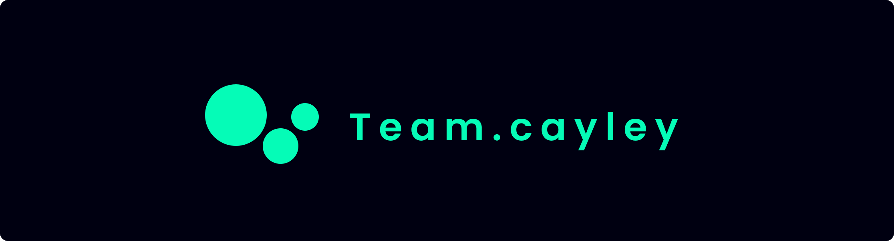

About Team.Cayley
Team.Cayley에 대한 소개입니다.
1. Team.Cayley
 Team.Cayley는 중앙대학교 재학생들과 문헌정보학과 김학래 교수로 구성된 프로젝트 팀이다. 2020년부터 시작된 Team.Cayley는 다양한 주제로 데이터 분석 및 디지털 아카이브 프로젝트를 진행하고 있다. 현재까지 진행한 프로젝트로는 'COVID-19: 우리의 기억', 'COVID-19 데이터 분석 A to Z', '문화재 시냅스: 국보 데이터 연결하기'가 있다.
2. 지향점
Team.Cayley가 프로젝트를 진행할 때 지향점으로 삼고 있는 부분은 다음과 같다.
- 가치 중립적인 디지털 기록
- 지속가능한 협업 모델
- 오픈 데이터 원칙
Team.Cayley는 가치 중립적인 디지털 기록을 위해 특정 분야나 가치관에 치우치지 않도록 중립을 지키며 데이터를 다루고 있다. 팬데믹 이후 시작되어, 비대면으로 회의를 진행하는 만큼 Zoom, Google Meet, Slack 등 온라인 환경에서의 소통방식을 찾아 지속가능한 협업 모델을 구축해왔다. 더불어 Team.Cayley는 오픈 데이터 원칙에 따라 프로젝트 과정에서 수집 및 구축된 모든 결과를 Github, 웹페이지 등의 방식을 통해 공유하고 있다.
3. 활동 내역
2020년 5월부터 지금까지 Team.Cayley가 걸어온 길은 다음과 같다.
| 시기 | 활동 |
|---|---|
| 2020. 5. | 코로나19 디지털 아카이브 프로젝트 시작 |
| 2020. 7. | 행정안전부 정부혁신 해커톤 참가 |
| 2021. 2. | 국제오픈데이터데이 개최 |
| 2021. 7. | 문화재 데이터 구축 프로젝트 시작 |
| 2022. 2. | 국립중앙도서관 디지털 아카이브 기증 |
Team.Cayley는 2020년 5월 한국의 코로나19 데이터를 분석 및 아카이브하는 '코로나19: 우리의 기억' 프로젝트로 시작되었다. 2020년 7월에는 같은 주제로 행정안전부의 정부혁신 해커톤에도 참가했다. 이듬해에는 기존 프로젝트를 더 발전시켜 코로나19 공공데이터를 비롯한 데이터 전반을 톺아보는 'COVID-19: A to Z' 프로젝트를 진행했다. 2021년 2월에는 해당 주제로 국제 오픈데이터데이를 공동개최하여 프로젝트 결과물을 발표하고, Machine-readable한 데이터의 중요성에 대해 주장했다. 같은 해 7월에는 팀의 지향점을 유지하면서도 주제를 변경하여 '문화재 시냅스: 국보 데이터 연결하기' 프로젝트를 시작하여 현재까지 지속해오고 있다.

4. 프로젝트 결과물
각 프로젝트의 결과물은 다음 링크에서 확인할 수 있다.